Oben steht der Name des USB-Speichers, zum Beispiel USB-Laufwerk, USB storage oder der Name des Sticks.
FotoSafe Hilfe
Hilfe & Anleitungen.
Hier findest du die vollständige bebilderte Hilfe: USB-Speicher erkennen, OTG-Adapter verstehen, den richtigen Ordner wählen und typische Verbindungsprobleme lösen. Entscheidend ist nicht nur der Ordnername: Oben im Android-Dateidialog muss der USB-Datenträger stehen.
Oben steht Galaxy S23, Interner Speicher oder ein Handyordner. Dann würdest du wieder auf dem Smartphone speichern.
Im Video: den richtigen Ordner wählen
Die roten Pfeile zeigen genau, wo du tippen musst. Das Video läuft bewusst langsam und hat keinen Ton.
Aufgenommen auf einem Samsung Galaxy S23. Die Darstellung kann je nach Handy und Android-Version leicht abweichen.
Dauer: etwa 19 Sekunden
Darauf zeigen die Pfeile
- In FotoSafe auf „Sicherungsort wählen“ tippen.
- Links oben das Menü der Dateiauswahl öffnen.
- „USB-Speichergerät“ auswählen.
- „Diesen Ordner verwenden“ antippen.
- Den Zugriff mit „Zulassen“ bestätigen.
Am Ende muss in FotoSafe bei „Ziel“ der USB-Speicher stehen.
Was ist ein OTG-Adapter?
OTG steht für „On-The-Go“. Ein OTG-Adapter ist ein kleines Verbindungsstück, mit dem dein Android-Handy einen normalen USB-Stick lesen und beschreiben kann.
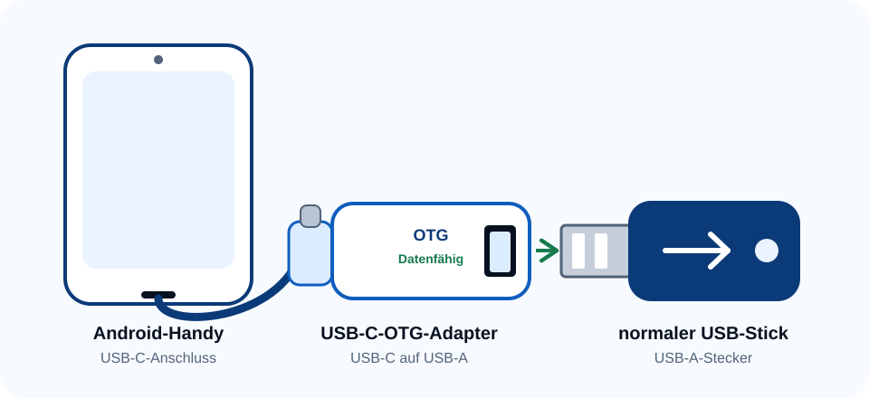
Wann brauchst du ihn?
- Ein klassischer, breiter USB-A-Stick passt nicht direkt in den USB-C-Anschluss des Handys. Dafür brauchst du den Adapter.
- Hat dein Stick bereits einen USB-C-Stecker oder beide Stecker, brauchst du keinen zusätzlichen Adapter.
- Ein USB-C-Hub mit USB-A-Buchse funktioniert ebenfalls, wenn er Datenübertragung unterstützt.
Wichtig: Ein reiner Ladeadapter genügt nicht. In der Beschreibung sollte ausdrücklich OTG oder Datenübertragung stehen.
Schritt-für-Schritt-Anleitung
Die Bilder stammen aus dem echten FotoSafe- und Samsung-Dateidialog. Bezeichnungen können je nach Hersteller und Android-Version leicht abweichen.
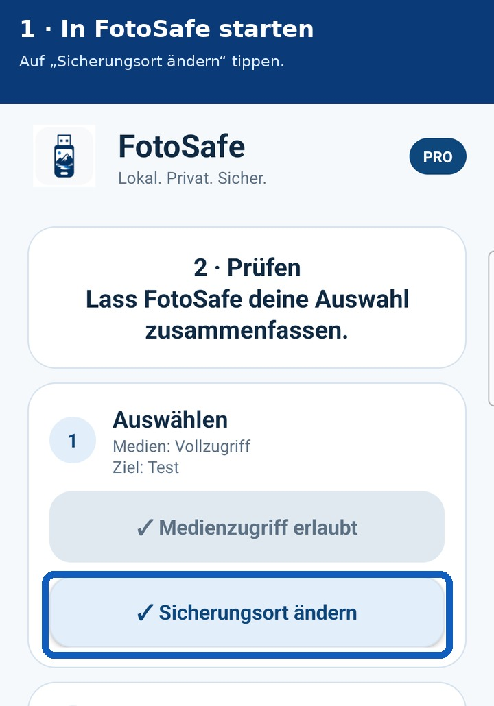
Echte FotoSafe-Ansicht auf einem Samsung Galaxy S23.
USB-Stick anschließen
Stecke einen USB-C-Stick direkt an. Für einen normalen USB-A-Stick verwendest du einen datenfähigen USB-C-OTG-Adapter. Warte anschließend einige Sekunden.
- Entsperre das Handy.
- Öffne FotoSafe.
- Tippe unter Auswählen auf „Sicherungsort ändern“.
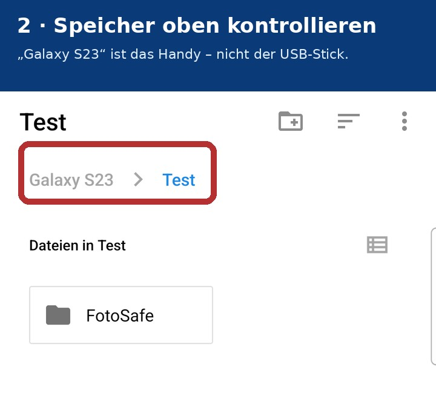
Hier ist noch „Galaxy S23 › Test“ gewählt – das ist absichtlich das falsche Beispiel.
Oben den Speicher prüfen
Der Android-Dateidialog öffnet sich oft beim zuletzt verwendeten Ordner. Schaue zuerst auf den Namen ganz oben beziehungsweise in der Pfadzeile.
- „Galaxy S23“ bedeutet interner Handyspeicher.
- „Test“, „Downloads“ oder „DCIM“ können ebenfalls Handyordner sein.
- Bestätige noch nichts, solange der USB-Datenträger nicht eindeutig genannt wird.
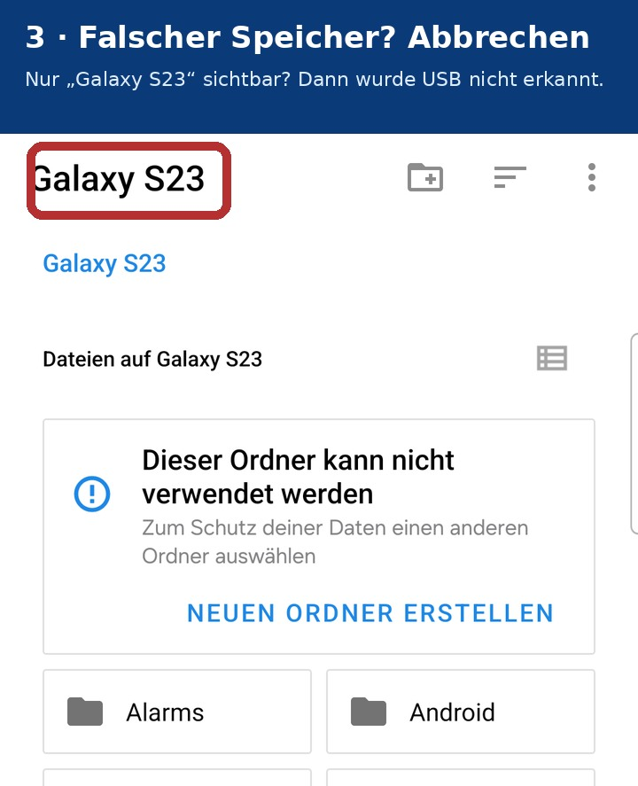
Wenn nur das Handy als Speicher auftaucht, kann FotoSafe den USB-Stick nicht auswählen.
USB-Speicher öffnen
Wechsle in der Speicherortauswahl zum USB-Datenträger. Je nach Gerät erscheint er als USB-Laufwerk, USB storage, Herstellername oder eigener Datenträgername.
Auf manchen Android-Versionen gibt es dafür links oben ein Menü. Bei Samsung kann der USB-Speicher direkt als eigener Speicherort erscheinen. Wenn nur der Handyname sichtbar bleibt, gehe zu „USB wird nicht angezeigt“.
Ordner am USB-Stick bestätigen
Öffne den USB-Stick. Wenn die Schaltfläche aktiv ist, kannst du den USB-Hauptordner wählen. Falls Android das nicht erlaubt:
- Tippe auf „Neuen Ordner erstellen“.
- Vergib beispielsweise den Namen „Backup“.
- Öffne diesen Ordner und tippe auf „Diesen Ordner verwenden“.
- Bestätige anschließend Androids Zugriffsabfrage mit „Zulassen“.
FotoSafe erstellt im gewählten Speicherort automatisch seinen eigenen Ordner FotoSafe.
Vor dem Bestätigen kontrollieren
Oben steht der USB-Datenträger, nicht das Handy.
Der Button „Diesen Ordner verwenden“ ist aktiv.
Du wählst einen Ordner, nicht einzelne Fotos oder Videos.
Zurück in FotoSafe prüfen
Nach der Auswahl zeigt FotoSafe unter „Ziel“ den gewählten Sicherungsort. Prüfe den Namen noch einmal, bevor du „Auswahl prüfen“ und später das Backup startest.
Wichtig: Ziehe Stick oder Adapter während des Backups nicht ab. Prüfe wichtige Sicherungen anschließend direkt am USB-Stick.
Merksatz
Steht oben der Handyname, bist du am falschen Speicher. Steht dort der USB-Datenträger, kannst du den Ordner verwenden.
USB-Stick wird nicht angezeigt?
Wenn Android den Stick nicht als Speicherort anbietet, kann FotoSafe ihn ebenfalls nicht auswählen. Diese Reihenfolge verhindert unnötiges Formatieren.
1. Verbindung neu herstellen
- Dateidialog schließen.
- Stick und Adapter abziehen.
- Neu und vollständig einstecken.
- Einige Sekunden warten und FotoSafe erneut öffnen.
2. Mit „Eigene Dateien“ prüfen
Öffne Samsungs App „Eigene Dateien“ oder den Dateimanager deines Herstellers. Wird der USB-Stick auch dort nicht angezeigt, liegt das Problem nicht an FotoSafe.
3. Adapter und Strombedarf
Prüfe einen anderen datenfähigen OTG-Adapter oder einen kleineren USB-Stick. Manche Laufwerke benötigen mehr Strom, als das Handy zuverlässig liefern kann.
4. Dateisystem prüfen
exFAT ist für große Videos geeignet und funktioniert häufig mit Android, Windows und macOS. FAT32 hat eine Dateigrößenbegrenzung von 4 GB.
Formatieren nur als letzter Schritt
Achtung: Beim Formatieren werden alle Dateien auf dem USB-Stick gelöscht. Sichere vorhandene Daten zuerst auf einem anderen Speicher. Formatiere niemals nur auf Verdacht.
Immer noch nicht sichtbar?
Teste Stick und Adapter an einem anderen Android-Gerät oder Computer. Weitere Support-Hilfe
Sachlich auswählen statt raten
Hilfe bei der Auswahl
Du bist nicht sicher, welcher USB-Stick, Adapter oder welches Smartphone geeignet ist? Hier findest du verständliche Auswahlhilfen und konkrete Produktempfehlungen. Entscheidend sind der Anschluss, die Unterstützung von USB-OTG und die Datenübertragung.
- Anschluss prüfen: USB-C am Handy, USB-C oder USB-A am Stick.
- Daten statt nur Laden: OTG und Datenübertragung müssen unterstützt werden.
- Kompatibilität prüfen: Android-Version, Dateisystem und realer FotoSafe-Test zählen.
Kategorie A
OTG-Adapter
Ein USB-C-OTG-Adapter verbindet einen klassischen USB-A-Stick mit dem Smartphone. Er muss zum Anschluss des Handys passen und ausdrücklich OTG beziehungsweise Datenübertragung unterstützen; reine Ladeadapter sind ungeeignet. Eine kompakte Bauform belastet den Handyanschluss weniger.
- USB-C auf USB-A
- OTG und Datenübertragung
- Möglichst kompakt und passend zum Handy
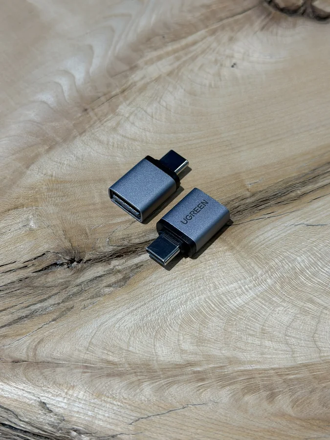
UGREEN kompakter OTG-Adapter
Kleine, starre Ausführung im Zweierpack. Der Adapter wurde praktisch mit FotoSafe und einem klassischen USB-A-Stick verwendet.
Mit FotoSafe getestet Werbung · Affiliate-LinkBei Amazon ansehen*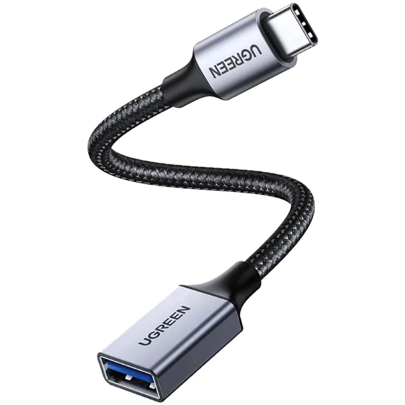
UGREEN OTG-Adapter mit Kabel
Die flexible Verbindung kann den USB-C-Anschluss des Smartphones weniger stark belasten als ein langer, starrer Aufbau.
Noch nicht mit FotoSafe getestet Werbung · Affiliate-LinkBei Amazon ansehen*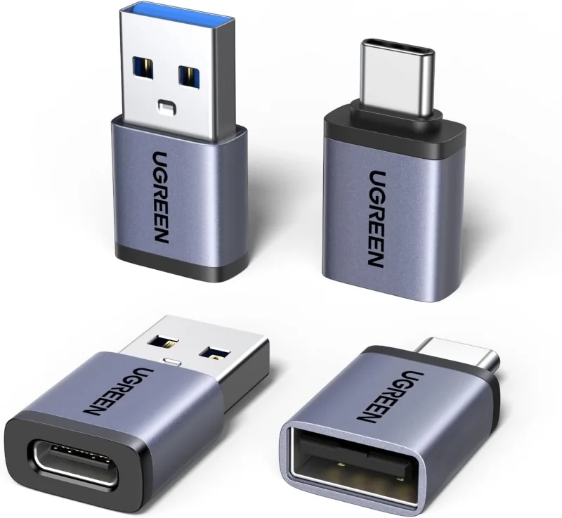
UGREEN Adapter-Set, 4-teilig
Das Set enthält Adapter in beide Richtungen. Für einen klassischen USB-A-Stick am Handy wird USB-C-Stecker auf USB-A-Buchse benötigt.
Mit FotoSafe getestet Werbung · Affiliate-LinkBei Amazon ansehen*Kategorie B
USB-Sticks mit USB-C
USB-C-Sticks können direkt mit vielen aktuellen Smartphones verbunden werden. Besonders praktisch sind Dual-Sticks mit USB-C und USB-A: Der USB-A-Stecker passt direkt an viele Windows-PCs. Welche Kapazität sinnvoll ist, hängt von deiner Fotomenge ab; eine pauschale Kompatibilitätsgarantie gibt es nicht.
- Direktanschluss per USB-C
- Dual-Stick für Handy und PC
- Kapazität passend zur Fotomenge
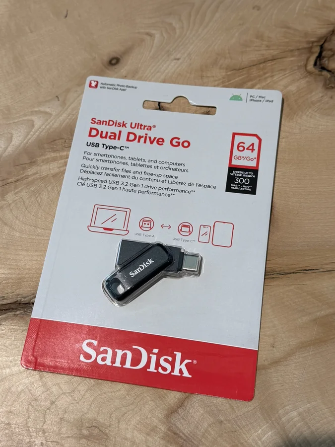
SanDisk Ultra Dual Drive Go 64 GB
Direkter Anschluss am USB-C-Smartphone und am klassischen USB-A-Port eines Computers. Dieses Modell wurde praktisch mit FotoSafe verwendet.
Mit FotoSafe getestet Werbung · Affiliate-LinkBei Amazon ansehen*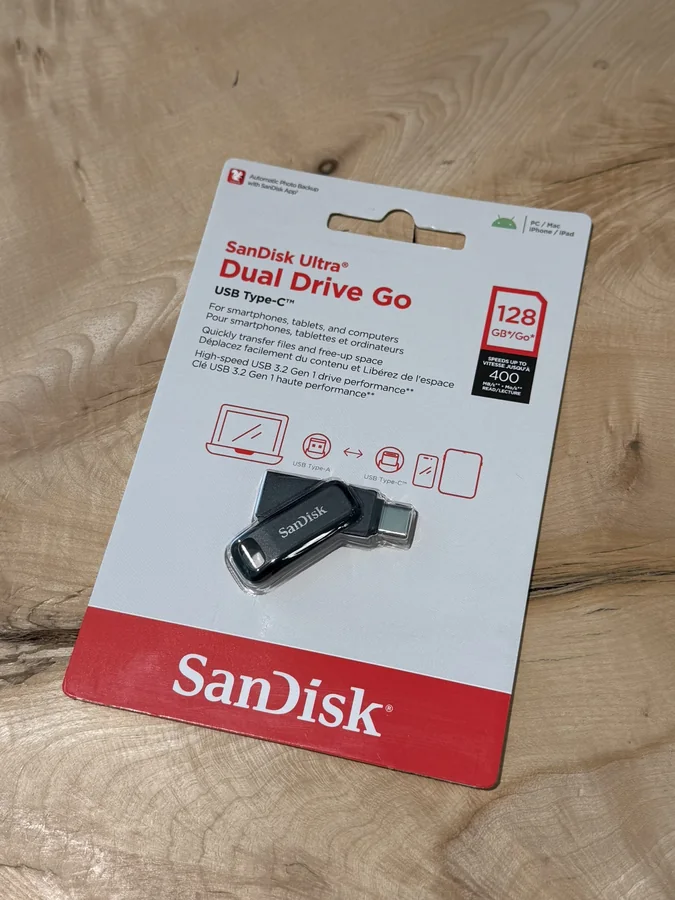
SanDisk Ultra Dual Drive Go 128 GB
Getestete Mittelgröße für Foto- und Videosicherungen mit direktem USB-C-Anschluss am Smartphone und USB-A für den Computer.
Mit FotoSafe getestet Werbung · Affiliate-LinkBei Amazon ansehen*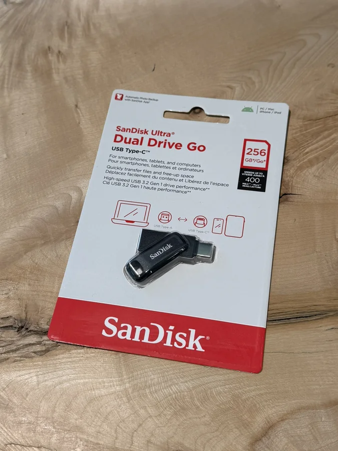
SanDisk Ultra Dual Drive Go 256 GB
Unsere getestete Empfehlung für größere Foto- und Videosicherungen sowie den einfachen Wechsel zwischen Smartphone und Computer.
Mit FotoSafe getestet Werbung · Affiliate-LinkBei Amazon ansehen*Kategorie C
USB-Sticks ohne USB-C-Anschluss
Klassische USB-A-Sticks benötigen am Smartphone normalerweise einen passenden, datenfähigen OTG-Adapter. Dafür können sie direkt an vielen Computern verwendet werden. Achte auf Datenübertragung, Dateisystem und Strombedarf. Stick und Adapter dürfen während eines Backups nicht entfernt werden.
- OTG-Adapter am Smartphone nötig
- Direkt an vielen PCs nutzbar
- Dateisystem und Strombedarf prüfen
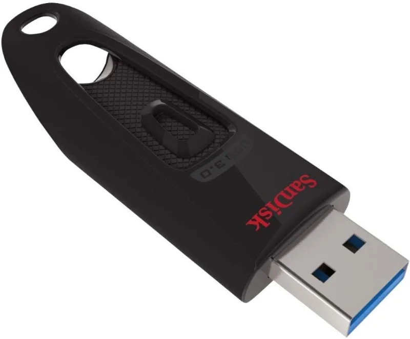
SanDisk Ultra 64 GB
Klassischer USB-A-Stick für Computer. Am Smartphone ist zusätzlich ein datenfähiger USB-C-OTG-Adapter erforderlich.
Mit FotoSafe getestet Werbung · Affiliate-LinkBei Amazon ansehen*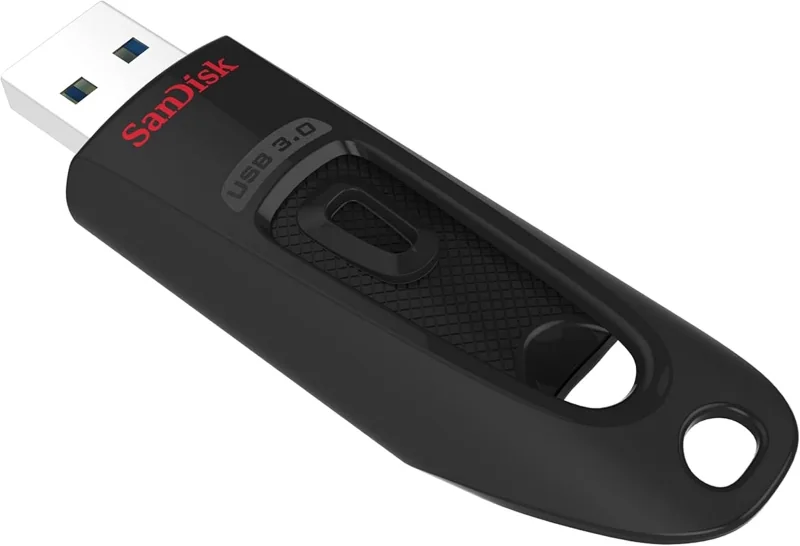
SanDisk Ultra 128 GB
Getestete Mittelgröße für lokale Sicherungen. Für die Nutzung am Smartphone wird ein passender USB-C-OTG-Adapter benötigt.
Mit FotoSafe getestet Werbung · Affiliate-LinkBei Amazon ansehen*
SanDisk Ultra 256 GB
Unsere getestete USB-A-Empfehlung für größere lokale Sicherungen. Am Smartphone ist weiterhin ein OTG-Adapter erforderlich.
Mit FotoSafe getestet Werbung · Affiliate-LinkBei Amazon ansehen*Kategorie D
Geeignete Smartphones
Das Android-Gerät muss USB-OTG und das Android Storage Access Framework unterstützen. Konkrete Empfehlungen sollen bevorzugt auf realen FotoSafe-Tests beruhen. Die Darstellung des Dateidialogs kann je nach Hersteller und Android-Version abweichen; ohne echten Test gibt es keine Aussage „garantiert kompatibel“.
- USB-OTG erforderlich
- Android Storage Access Framework
- Testgerät und Android-Version dokumentieren
Aktueller FotoSafe-Teststand: Galaxy A57 5G, Galaxy S26 und HONOR 600 wurden praktisch mit FotoSafe geprüft. Beim HONOR 600 ist FotoSafe 0.14 als Testversion dokumentiert; bei den beiden Samsung-Modellen ist die verwendete FotoSafe-Version nicht dokumentiert. Die Tests sind eine positive Erfahrung, aber keine pauschale Kompatibilitätsgarantie für jedes System- oder App-Update.
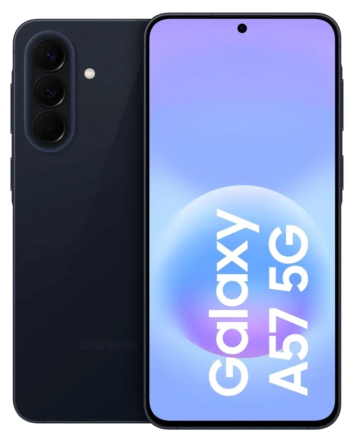
Samsung Galaxy A57 5G
Das verlinkte Mittelklasse-Modell mit 128 GB wurde praktisch mit FotoSafe geprüft. Künftige System- oder App-Updates können das Verhalten verändern.
Mit FotoSafe getestet Technische Daten bei Samsung Werbung · Affiliate-LinkBei Amazon ansehen*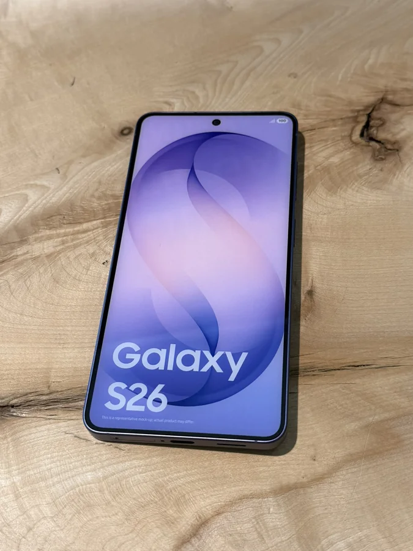
Samsung Galaxy S26
Unsere praktisch getestete Smartphone-Empfehlung in der verlinkten 256-GB-Variante. Die positive Erfahrung ist keine Garantie für spätere Updates.
Mit FotoSafe getestet Technische Daten bei Samsung Werbung · Affiliate-LinkBei Amazon ansehen*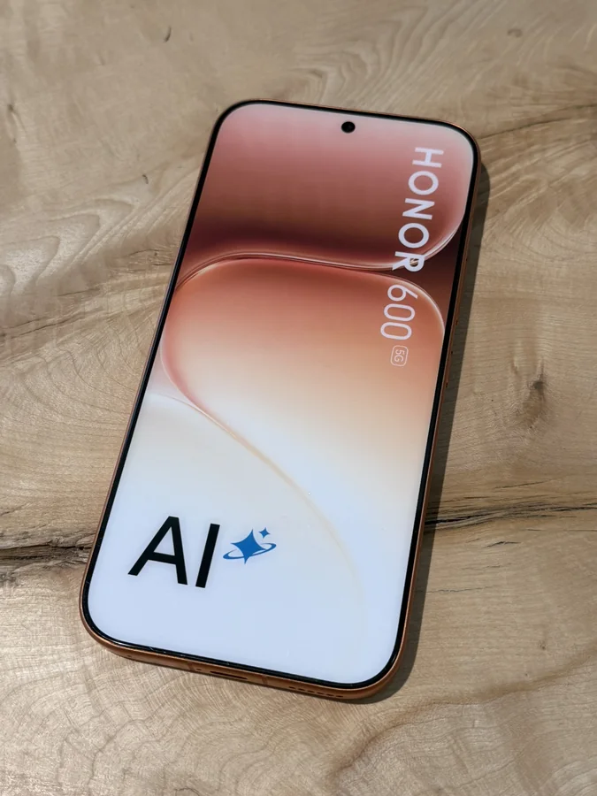
HONOR 600
Das Modell wurde mit FotoSafe 0.14 praktisch getestet. Diese dokumentierte Erfahrung ist keine Garantie für jeden späteren System- oder App-Stand.
Mit FotoSafe 0.14 getestet Technische Daten bei HONOR Werbung · Affiliate-LinkBei Amazon ansehen*